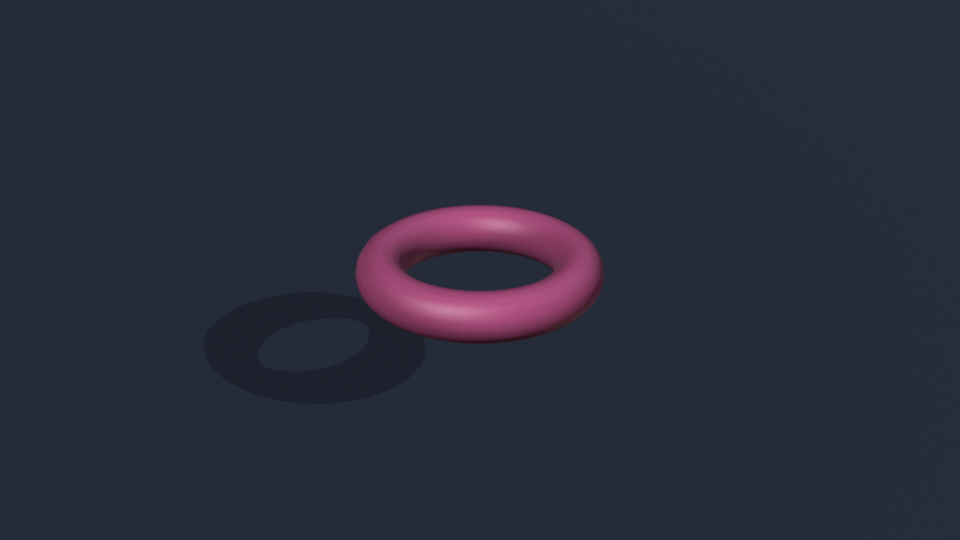
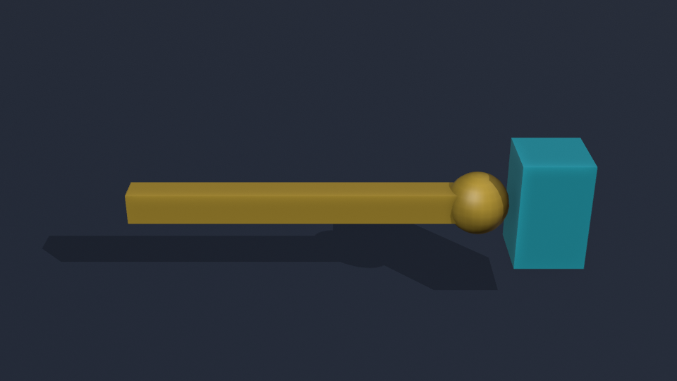
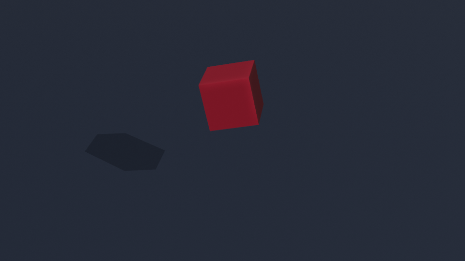
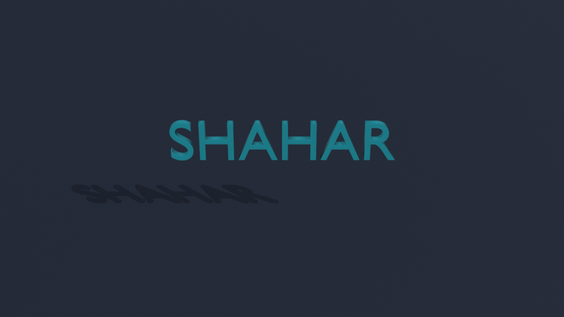

על כיסא הבמאי: שחר
תן לזה לזוז.
תן לזה אופי.
דונאט שלא יודע לנחות. אגרוף שנמתח בלי גבול. חפץ שמתעלם מכוח הכבידה. ארבעה סרטים קטנים. אתה הבמאי.
מתחילים ליצור ←מתחילים ממשימה אחת. חוזרים לבאה כשמתחשק.
בלי תוספים, תכנות או בניית שלד לדמות.
טייק 01 / תקרית הדונאט
BLENDER משלים את התנועה.

נוצר ב־BLENDER 24 FPS
אתה בוחר את המצבים.BLENDER משלים את התנועה.

03 / דברים מוזריםמשהו כאן מרחףבונים מתח בעזרת תזמון · 20–30 דקות
04 / סרטי שנות ה־80האולפן שלך. הפתיח שלך.כניסה גדולה וחריגה קטנה · 20–30 דקות